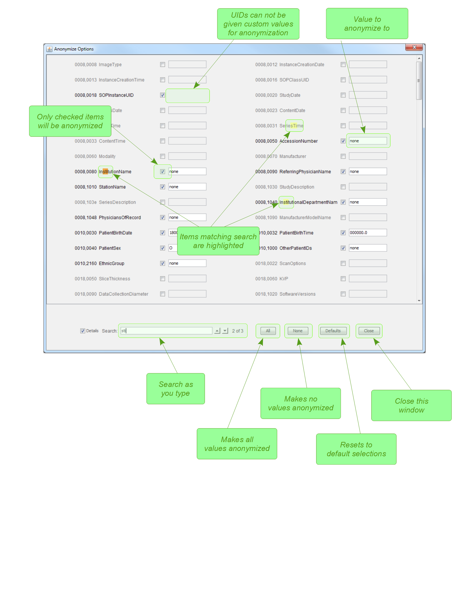

The Anonymize Options ... button near the top of the main
window opens the window shown below. This window allows you to select which attributes should
be anonymized and what value they should have.

Attributes are only added to this list when they are encountered by
loading a file, so if this window is viewed before loading files, it will
show no attributes. This is by design as there are over 4000 DICOM attributes,
and displaying all of them would be a cumbersome user experience.
If an attribute is encountered multiple times within the same file, it will
be anonymized with the same value. The exception is unique (non-class) UIDs, which
are systematically replaced with newly generated UIDs that maintain consistency
across series.
The purpose of this screen is to give the user more control over what
is anonymized and the values used. In particular, if the user notes
that some fields unexpectedly contain PHI (Protected Health Information)
that should be anonymized, then that field may be marked for anonymization and
the corresponding field set to the value of their choice.
Changes made on this screen are only valid for the current program session.
The default list of DICOM attributes to be anonymized was derived from
the DICOM 2011 standard. In general, information that identifies the
patient, physicians, and treatment location are anonymized. The list
is defined in the configuration file.